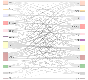
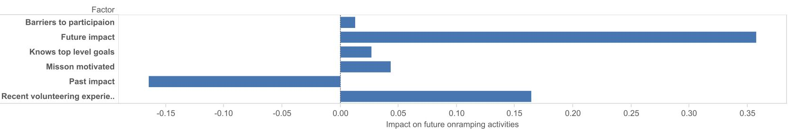

All the Things they didn't teach you at University
How to survive and thrive in Open Source

who -u
Dan Čermák
| Software Developer @SUSE | |
| i3 SIG, Package maintainer | |
| Developer Tools, Testing and Documentation, Home Automation | |
| https://dancermak.name | |
| dcermak / D4N | |
| @Defolos@mastodon.social | |
| @DefolosDC |
Methodology & Tech-Stack
- test things properly in staging, but sometimes you have to patch production
- real infra is held together by and 🧙
gitis 👑- backend: , ,
- frontend:
- enterprise: , SAP, Kotlin
…some of this will change, some won't…
but one thing will never change
you have to work with people
Working with People in FLOSS
- their motivation ≠ your motivation
- their employer ≠ your employer
- their culture ≠ your culture
- their timezone ≠ your timezone
- volunteers, paid contributors, students, etc.
Community
- "just a bunch of people"
- have a common goal
- often no clear joining rules
- empower others
How to communicate
- asynchronous: email, forums
- synchronous: chat, voice/video chat
- issue/bug/feature tracker(s)
- one place to reach the community
avoid ambiguities!
Yeah, right
- keep it simple
- be kind to each other
Build a welcoming community
- enforce a code of conduct
- provide a place for your community to meet & talk
- document & enforce processes meticulously
- be present and friendly
- empower your contributors
Motivations for contributing
- Ideology
- Altruism
- Fun
- Kinship
- Reputation
- Reciprocity
- Learning
- Own-Use
- Career
- Pay
Keeping the Community motivated

Conflicts - One Bad Apple can spoil the Barrel
There will be conflicts

What it means to be a Maintainer
- you will have to learn to let go & share responsibilities
- take care of all the "boring" parts:
- infra
- documentation
- onboarding & mentoring
- issue triage & patch reviews
- funding
- moderation
- licenses/legal
- project & release management
How to make your project popular
- build something that people truly need/want
- marketing: talks, tutorials, evangelizing
- documentation, documentation, documentation
The Contributor Funnel
Recruiting contributors

- past impact does not matter, perceived future impact does
- contributors need a vision
- good onboarding experience encourages further onboarding
- prompt responses boost the chances of a contributor returning
Take care of yourself!
- stay true to yourself & your motivation
- you must stay your top priority
Receiving feedback
- feedback is a gift
- thank, absorb and reflect
- don't defend yourself, adapt and discuss (if appropriate)
unfortunately:
- you will mostly get negative feedback, if at all
- only negative feedback can be crushing
- must train to not be personally bothered
Providing feedback
- criticize the code, not the person
- be constructive, clear and fact oriented
- be positive
- speak only on your behalf
a thank you never hurt anyone ❤️
So when should I start?
Now
but defer big announcements until it's ready™
This all sounds horrible!
It's a lot of fun
You will learn a lot
But only delve into Open Source as long as it is fun
So was that all the things they didn't teach me at University?
Of course not!
But it's a starting point for your journey
Links and Further Reading
- uncurled by Daniel Stenberg
- motivations for contributing arXiv:2101.10291
- Measuring Engagement from Mozilla
- The Open Source Contributor Funnel by Mike McQuaid
Questions?
Proposing Changes
- start small
- have a vision
- battle versus inertia
- address fears of all stakeholders
- get early adopters and early wins